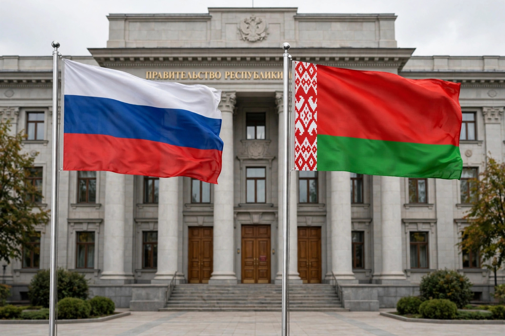

The Union State, officially the Union State of Russia and Belarus, is a supranational union between the Russian Federation and the Republic of Belarus created by treaty on 8 December 1999. Building on integration agreements signed in 1996 and 1997, the treaty envisaged common institutions, an eventual common currency, harmonised laws, and coordinated foreign and defence policy, while both states retain their sovereignty and international personalities. In practice the Union State functioned for many years as a loosely institutionalised framework, with deepening integration proceeding in steps and accelerating after 2020.
| Union State of Russia and Belarus | |
|---|---|
 Flags of Russia and Belarus flying side by side outside an official building Member states' flags | |
| Established | 8 December 1999 (treaty) |
| Members | Russia, Belarus |
| Supreme body | Supreme State Council |
| Executive | Council of Ministers; Standing Committee |
| State Secretary | Dmitry Mezentsev (from 2021) |
| Capitals | Moscow; Minsk |
Immediately after the dissolution of the Soviet Union in 1991, Belarus's leadership sought close ties with Russia. A Treaty on the Community of Russia and Belarus was signed in April 1996 by presidents Boris Yeltsin and Alexander Lukashenko, followed in 1997 by a treaty on a Union of the two states. The 1999 Union State treaty went further, promising phased political and economic integration, a union parliament, and a single currency — milestones that were repeatedly postponed as Lukashenko resisted subordination and Russia pressed for economic reforms and asset sales.
The Union State's bodies include the Supreme State Council (the two presidents and senior officials), a Council of Ministers, a Parliamentary Assembly, and a Standing Committee that administers union programmes, many of them in defence industry, space, and science. A customs and border regime between the two countries has long been largely open, and citizens enjoy equal rights of movement, employment, and (in Russia) study. In November 2021 the two presidents signed a decree approving 28 union integration programmes covering tax, customs, energy, and transport; in 2023 the two states adopted a common security concept and Russia announced the deployment of tactical nuclear weapons in Belarus, deepening the military dimension of the union.
Analysts differ on the Union State's significance: some treat it as an integration project in slow motion that has delivered tangible coordination in customs, migration, and defence; others see it mainly as a rhetorical device through which Belarus extracts Russian subsidies and Russia secures a loyal ally, with key treaty commitments — a common currency, a union constitution, a full parliament — still unfulfilled more than two decades on.
Categories: Russia–Belarus relations · Supranational unions · 1999 establishments